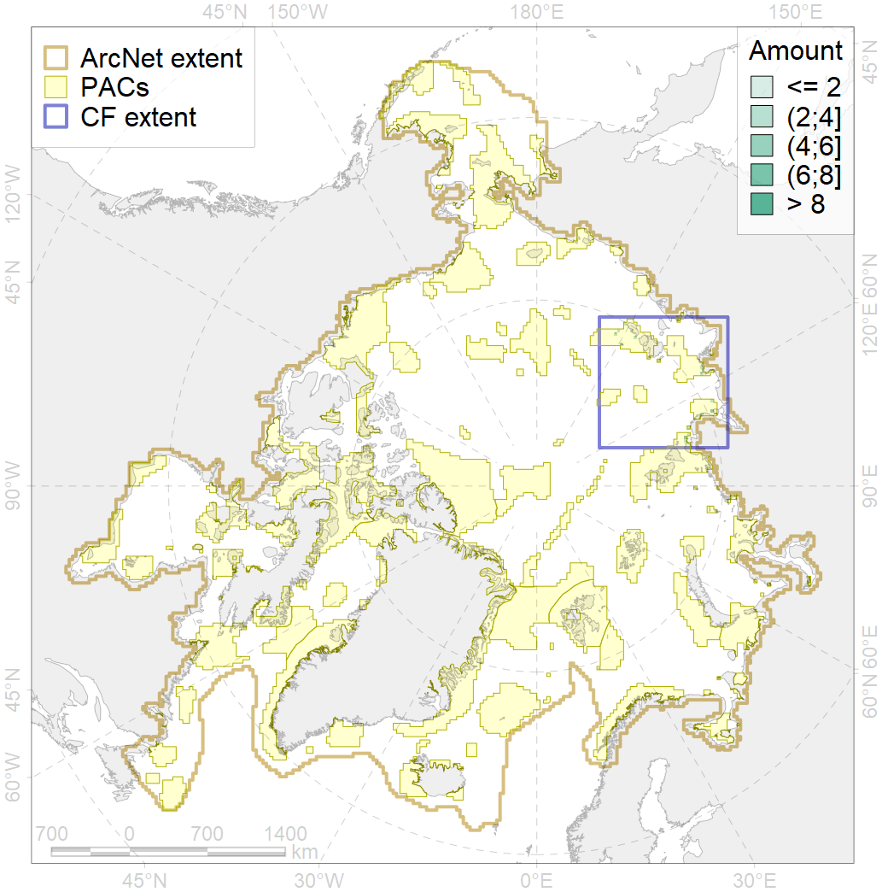
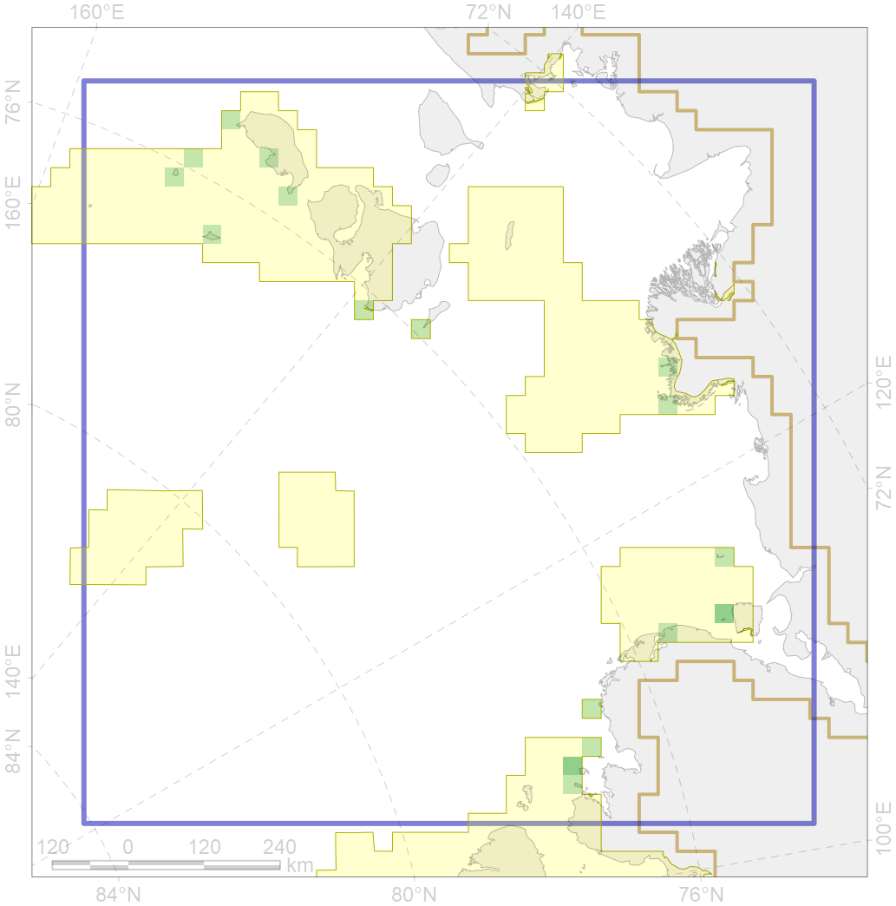

1013

| CF ID | 1013 |
| CF Name | Laptev Walrus haulouts |
| Time Period | 1940s-2013 |
| Source(s) | Sokolov, et al., 2001, Glazov et al., 2013 |
| Seasonality | June-November |
| Depth Horizon | > 0m |
| Methodology | Compilation from existing reports and expert knowledge |
| Author Name | Maria Solovyeva |
| Notes | |
| Conservation Target Set in the Scenario | 0.9 |
| Conservation Target Achieved in the Scenario | 0.941 (Scenario: 104.5%) |
| PAC ID | Proportion in the PAC | Contribution to ArcNet Target Achievement | PAC’s Contribution to the Achieved Target |
|---|---|---|---|
| 11 | 45.7% | 48.1% | 46.0% |
| 12 | 8.6% | 9.5% | 9.1% |
| 13 | 20.0% | 22.2% | 21.2% |
| 14 | 25.7% | 24.7% | 23.6% |
| inner | 100.0% | 104.5% | 100.0% |
| outer | 0.0% | 0.0% | 0.0% |